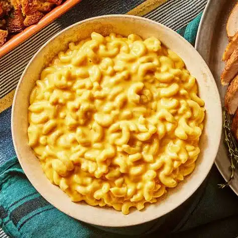

Macaroni and cheese is a beloved comfort food featuring tender, curved pasta—most commonly elbow macaroni—smothered in a rich, velvety cheese sauce. Whether baked in a golden, bubbly casserole or stirred quickly on the stovetop, the dish combines the savory, umami-rich depth of cheddar or Gruyère with a smooth, glossy emulsion that clings to every noodle.